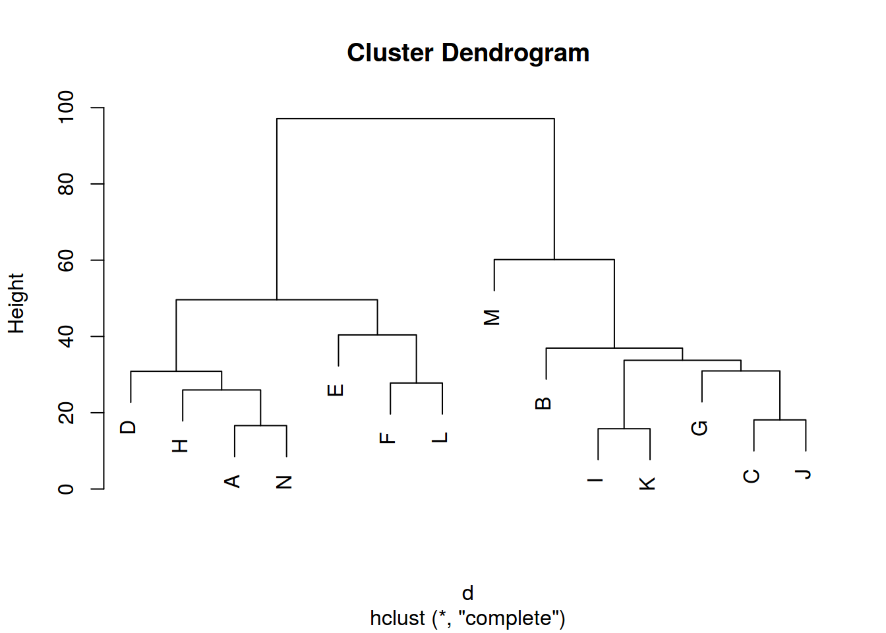

Качаем данные.
icelandic <- read.csv("https://goo.gl/7gIjvK")library(tidyverse); library(mosaic)Ты скрестил всех носителей вместе, однако физиологические различия между спикерами могут все невелировать, так что я хочу выяснять является ли разница статистически значима для каждого носителя по отдельности.
icelandic %>%
ggplot(aes(vowel.dur, fill = aspiration, color = aspiration))+
geom_density(alpha = 0.4)+
geom_rug()+
facet_wrap(~speaker)+
labs(title = "Vowel duration density plot",
caption = "Data from (Coretta 2017)",
x = "vowel duration")icelandic %>%
ggplot(aes(sample = vowel.dur, color = aspiration))+
geom_qq()+
facet_wrap(~speaker)+
labs(title = "Vowel duration density plot",
caption = "Data from (Coretta 2017)")
Мы наблюдаем следуещее:
icelandic %>%
group_by(speaker, aspiration) %>%
summarise(mean.dur = mean(vowel.dur),
sd.dur = sd(vowel.dur),
number = n())## Source: local data frame [10 x 5]
## Groups: speaker [?]
##
## speaker aspiration mean.dur sd.dur number
## <fctr> <fctr> <dbl> <dbl> <int>
## 1 brs02 no 95.27593 19.81246 78
## 2 brs02 yes 72.87988 18.85812 85
## 3 bte03 no 102.75791 29.38451 81
## 4 bte03 yes 95.40109 20.03149 76
## 5 jj04 no 95.72652 25.13620 79
## 6 jj04 yes 86.80463 20.06335 72
## 7 shg05 no 77.65635 18.86992 76
## 8 shg05 yes 63.27287 15.72727 84
## 9 tt01 no 100.59767 26.77305 87
## 10 tt01 yes 78.25853 16.74632 88В каждом боксплоте от 72 до 85 наблюдений (интересно, а чего это их разное количество?). А еще вообще-то нужно подумать, одинаковая ли у них дисперсия? А то это же тоже одно из предположений t-test.
Мы будем говорить о следующей разнице:
icelandic %>%
group_by(speaker, aspiration) %>%
summarise(mean.dur = mean(vowel.dur)) %>%
summarize(diff.mean = diff(mean.dur)) ->
obs.diff; obs.diff## # A tibble: 5 × 2
## speaker diff.mean
## <fctr> <dbl>
## 1 brs02 -22.396051
## 2 bte03 -7.356828
## 3 jj04 -8.921885
## 4 shg05 -14.383484
## 5 tt01 -22.339140icelandic %>%
left_join(., obs.diff) %>%
ggplot(aes(aspiration, vowel.dur, label = paste("observed effect\n", round(diff.mean, 3))))+
geom_text(aes(x = "yes", y = 200))+
geom_boxplot()+
facet_wrap(~speaker)+
labs(title = "Vowel duration boxplots and observed mean difference",
caption = "Data from (Coretta 2017)",
y = "vowel duration")Я буду шафлить (\(10^{4}\) раз) и считать среднее. Для тех кто не помнит философию: у нас есть две группы, и мы хотим узнать значимо ли различаются средние. Для этого берем и перемешиваем эти группы. Если при куче перемешиваний разница средних сильно отличаются от наблюдаемой разницы, значит, мы не можем утверждать, что разница между средними групп равна нулю.
set.seed(42)
do(10000) *
(icelandic %>%
group_by(speaker) %>%
mutate(vowel.dur = shuffle(vowel.dur)) %>%
group_by(speaker, aspiration) %>%
summarize(mean = mean(vowel.dur))) ->
many.shuffles; tail(many.shuffles)## Source: local data frame [6 x 5]
## Groups: speaker [3]
##
## speaker aspiration mean .row .index
## <fctr> <fctr> <dbl> <int> <dbl>
## 1 jj04 no 92.65877 1 10000
## 2 jj04 yes 90.17064 2 10000
## 3 shg05 no 69.21821 1 10000
## 4 shg05 yes 70.90738 2 10000
## 5 tt01 no 90.81308 1 10000
## 6 tt01 yes 87.93193 2 10000Посчитаем разницу в каждой симуляции:
many.shuffles %>%
group_by(.index, speaker) %>%
summarize(diff.mean.shuffle = diff(mean)) ->
shuffle.diff; tail(shuffle.diff)## Source: local data frame [6 x 3]
## Groups: .index [2]
##
## .index speaker diff.mean.shuffle
## <dbl> <fctr> <dbl>
## 1 9999 tt01 1.768817
## 2 10000 brs02 2.206953
## 3 10000 bte03 4.183192
## 4 10000 jj04 -2.488128
## 5 10000 shg05 1.689177
## 6 10000 tt01 -2.881153И рисуем
shuffle.diff %>%
ggplot(aes(x = diff.mean.shuffle)) +
geom_density(fill = "lightblue")+
geom_rug()+
geom_vline(data = obs.diff, aes(xintercept = diff.mean), color = "red") +
geom_vline(data = obs.diff, aes(xintercept = -diff.mean), color = "red") +
facet_wrap(~speaker)+
labs(title = paste("Mean difference of", 10000, "shufflings and observed values (in red)"))Мы видим, что у трех носителей brs02, shg05 и tt01 наблюдаемая разница выходит далеко за пределы результатов перемешивания, а у носителей bte03 и jj04 они достаточно сильно заходят. Сколько из полученных разниц средних выходит за границы, поставленные нашими данными?
shuffle.diff%>%
left_join(., obs.diff) %>%
mutate(outside = diff.mean.shuffle > abs(diff.mean) | diff.mean.shuffle < diff.mean) %>%
group_by(speaker, outside) %>%
summarise(number = n()) %>%
ggplot(aes(speaker, number, fill = outside))+
geom_bar(stat = "identity", position = "dodge")Давайте забьюм на Стьюдента и посчитаем тест Уэлча. Тогда не надо бороться с предположением t-test об одинаковой дисперсии и одинаковом количестве наблюдений. Чтобы получить t-статистику нужно полученную в симуляциях разницу разделить на \(\sqrt{\frac{sd_1}{n_1}+\frac{sd_2}{n_2}}\).
icelandic %>%
group_by(speaker, aspiration) %>%
summarise(under.sqrt = sd(vowel.dur)/n()) %>%
spread(aspiration, under.sqrt) %>%
mutate(t.denominator = sqrt(no+yes)) %>%
select(speaker, t.denominator) ->
t.denominator; t.denominator## Source: local data frame [5 x 2]
## Groups: speaker [5]
##
## speaker t.denominator
## <fctr> <dbl>
## 1 brs02 0.6898305
## 2 bte03 0.7914189
## 3 jj04 0.7725525
## 4 shg05 0.6599378
## 5 tt01 0.7057161shuffle.diff %>%
left_join(., t.denominator) %>%
left_join(., obs.diff) %>%
ggplot(aes(diff.mean.shuffle/t.denominator))+
geom_density(fill = "lightblue")+
geom_vline(aes(xintercept = diff.mean/t.denominator), color = "red")+
geom_vline(aes(xintercept = -diff.mean/t.denominator), color = "red")+
facet_wrap(~speaker)+
labs(x = "t statistic")Ну и осталось посчитать p-value, но мне лень.